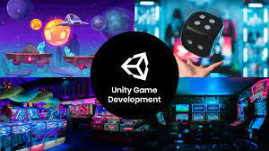
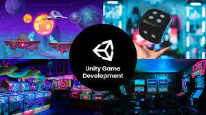

I AM
MUHAMMAD ATIF KHAN
I Am Web Developer
I Am Web Developer
I'm Muhammad Atif Khan, a Game and Web Developer, and Programmer. My portfolio showcases my passion for creating captivating digital experiences. In the realm of game development, I craft diverse and immersive games, while my web development projects prioritize responsive design and user-centric functionality. My programming skills span from elegant algorithms to efficient software solutions. Each project is a testament to my commitment to innovation and creativity. Explore my portfolio to discover the worlds I've brought to life and the digital solutions I've created. If you're looking to collaborate on your next project, I'm here to make your ideas a reality. ---In the realm of web development, I craft visually stunning and highly functional websites. My designs prioritize user experience and responsiveness, ensuring your online presence is not only eye-catching but also accessible to all. This concise introduction provides a quick overview of your skills and the types of projects in your portfolio.My portfolio serves as a testament to my dedication to innovation and craftsmanship in these domains. Whether you're seeking a captivating website, an immersive game, or a tailored software solution, I'm here to collaborate and transform your ideas into digital masterpieces.I'm a storyteller of virtual worlds, creating captivating games that transport players to new dimensions. Whether it's the thrill of action or the intrigue of puzzles, I breathe life into games that entertain, challenge, and inspire.
.jpg) 

I'm a Website Designer dedicated to crafting captivating and user-friendly digital spaces. My portfolio showcases a diverse range of projects, each meticulously designed to engage and inspire. I specialize in creating responsive, aesthetically pleasing websites that align with the latest design trends and best practices.

I am a seasoned Game Developer, dedicated to the craft of creating captivating digital experiences through the art of game development. With an unwavering passion for the gaming world, I specialize in transforming concepts into immersive, interactive adventures. My portfolio is a testament to my commitment to storytelling, captivating visuals, and engaging playgame.
I am a dedicated Programmer, driven by the intricacies and challenges of the digital world. My expertise spans a wide spectrum, from crafting elegant algorithms to developing efficient software solutions that solve complex problems. In the realm of programming,